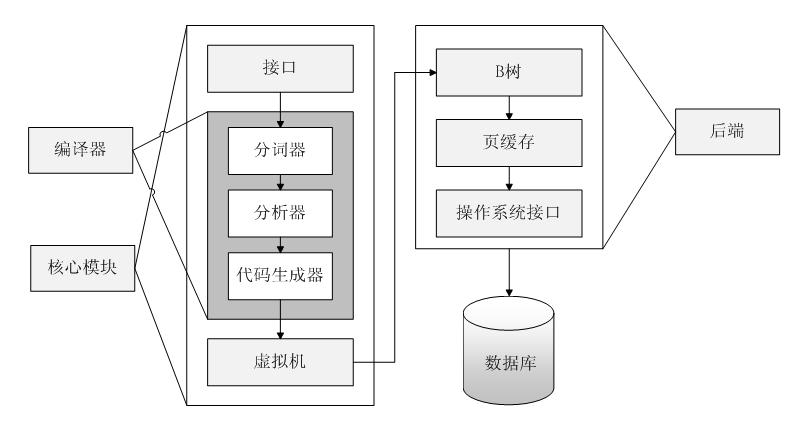
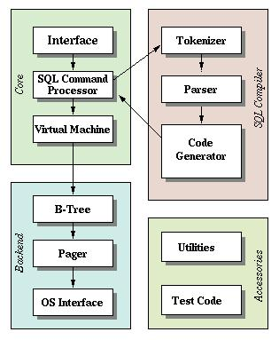

SQLite 架构
Table of Contents
SQLite拥有一个精致的、模块化的体系结构，并引进了一些独特的方法进行关系型数据库的管理。它由被组织在 3个子系统 中的 8个独立的模块 组成，这些模块又被分割为两个部分: 前端解析 系统和 后端引擎 ，如图所示：

- 前端预处理应用程序传递过来的SQL语句和SQLite命令，对获取的编码分析、优化，并转换为后端能够执行的SQLite内部字节编码。前端可分为三个模块：
- 标示分析
- 语法分析
- 代码生成器
- 后端是用来解释字节编码程序的引擎，这个引擎做的才是真正的数据库处理工作。后端部分由四个模块组成：
- 虚拟机(VM)
- B/B+树
- 页面调度程序(pager)
操作系统交界面
后端实现了 sqlite3_bind_*, sqlite3_setp, sqlite3_coloumn_*, sqlite3_reset和sqlite3_finalize 等API函数
这个模型将查询过程划分为几个不连续的任务，就像在流水线上工作一样 在体系结构栈的顶部编译查询语句，在中部执行它，在底部处理操作系统的存储和接口
体系结构
在内部，SQLite由以下几个组件组成：内核、SQL编译器、后端以及附件
- SQLite通过利用 虚拟机和虚拟数据库引擎 VDBE ，使调试、修改和扩展SQLite的内核变得更加方便
- 所有SQL语句都被编译成易读的、可以在SQLite虚拟机中执行的程序集
- SQLite支持大小高达2 TB的数据库，每个数据库完全存储在单个磁盘文件中
- 这些磁盘文件可以在不同字节顺序的计算机之间移动
- 这些数据以B+树（B+tree）数据结构的形式存储在磁盘上
- SQLite根据该文件系统获得其数据库权限
SQLite的体系结构图，如图所示:

公共接口Interface
SQLite库的大部分公共接口由 main.c , legacy.c 和 vdbeapi.c 源文件中的函数来实现，这些函数依赖于分散在其他文件中的一些程序，因为在这些文件中它们可以访问有文件作用域的数据结构
词法分析器Tokenizer
当执行一个包含SQL语句的字符串时，接口程序要把这个字符串传递给 tokenizer
- Tokenizer的任务是把原有字符串分割成一个个 标识符 token
- 把这些标识符传递给解析器
Tokenizer是用手工编写的，在C文件 tokenize.c 中
语法分析器Parser
语法分析器的工作是在指定的上下文中赋予标识符具体的含义。SQLite的 语法分析器 使用 Lemon LALR(1) 分析程序生成器来产生
- Lemon做的工作与YACC/BISON相同，但它使用不同的输入句法，这种句法更不易出错
- Lemon还产生可重入的并且线程安全的语法分析器
- Lemon定义了非终结析构器的概念，当遇到语法错误时它不会泄露内存
驱动Lemon的源文件可在 parse.y 中找到
代码生成器Code Generator
语法分析器在把标识符组装成完整的SQL语句后，就调用代码生成器产生虚拟机代码，以执行SQL语句请求的工作。代码生成器包含许多文件：
- attach.c
- auth.c
- build.c
- delete.c
- expr.c
- insert.c
- pragma.c
- select.c
- trigger.c
- update.c
- vacuum.c
- where.c
这些文件涵盖了大部分最重要、最有意义的事情
- expr.c处理SQL中表达式的代码生成
- where.c处理SELECT、UPDATE和DELETE语句中WHERE子句的代码生成
- attach.c, delete.c, insert.c, select.c, trigger.c, update.c和vacuum.c处理同名SQL语句的代码生成（这些文件在必要时都调用expr.c和where.c中的例程）
- 所有其他SQL语句的代码由build.c生成。文件auth.c实现sqlite3_set_authorizer()的功能
虚拟机Virtual Machine
代码生成器生成的代码由虚拟机来执行。总的来说，虚拟机实现一个专为操作数据库文件而设计的 抽象计算引擎
- 它有一个存储中间数据的 存储栈
- 每条指令包含 一个操作码 和 不超过三个额外的操作数
B-树B-Tree
一个SQLite数据库使用 B-树 的形式存储在磁盘上，B-树的实现位于源文件 btree.c 中
- 数据库中的 每个表 和 索引 使用一棵 单独的 B-树
- 所有的B-树存放在 同一个磁盘文件 中
- 文件格式的细节被记录在 btree.c开头的备注 里
- B-树子系统的接口在头文件 btree.h 中定义
页面高速缓存Page Cache
B-树模块以固定大小的数据块形式从磁盘上请求信息，默认的块大小是 1024 个字节，但是可以在512和65536个字节之间变化
- 页面高速缓存负责 读 、 写 和 缓存 这些数据块
- 页面高速缓存还提供 回滚 和 原子提交 的抽象，并且管理数据文件的 锁定
- B-树驱动模块从页面高速缓存中请求特定的页
当它想修改页面、想提交或回滚当前修改时，它也会通知页面高速缓存
页面高速缓存处理所有麻烦的细节，以确保请求能够快速、安全而有效地被处理
页面高速缓存的代码实现被包含在单一的C源文件 pager.c 中。页面高速缓存子系统的接口在头文件 pager.h 中定义
OS接口
为了在POSIX和Win32操作系统之间提供移植性，SQLite使用一个 抽象层 来提供操作系统接口
- OS抽象层的接口在 os.h 中定义
- 每种支持的操作系统有各自的实现：
- Unix使用os_unix.c
- Windows使用os_win.c，等等
- 每个特定操作系统的实现通常都有自己的头文件，如os_unix.h, os_win.h等
实用工具 Utilities
- 内存分配和字符串比较函数位于 util.c 中
- 语法分析器使用的符号表用Hash表来维护，其实现位于 hash.c 中
- 源文件 utf.c 包含Unicode转换子程序
- SQLite有自己的printf()实现（带一些扩展功能），在 printf.c 中
- 还有自己的随机数生成器，在 random.c 中
测试代码
如果计算回归测试脚本，超过一半的SQLite代码将被测试
- 主要代码文件中有许多assert()语句
- 源文件test1.c通过test5.c和md5.c实现只用于测试目的的一些扩展
- os_test.c后端接口用来模拟断电，以验证页面高速缓存的崩溃恢复机制
模块作用
SQLite 由以下几个主要模块组成：SQL 编译器、内核、后端。
- 接口 ：接口由SQLite C API组成，程序可以通过API与SQLite数据库进行交互
- 编译器 ：
- 分词器 Tokenizer 和 分析器 Parser 对执行的SQL语句进行语法检查
- 生成 语法树 方便 VDBE代码生成器 使用
- 把语法树传给 VDBE代码生成器 Code Generator 处理
- 代码生成器根据语法树生成 VDBE的类汇编语言操作码
- 后端 ：由 B-树 B-tree ， 页缓存管理 pager 和 操作系统接口 构成。B-tree和Pager共同对数据进行管理
- B-tree用与对数据建立索引，它维护着各个页面之间的复杂的关系，便于快速找到所需数据
- Pager的主要作用就是通过OS接口在B-tree和硬盘之间传递页面
| Next: 进程 | Previous：简介 | Home: SQLite 源码分析 |